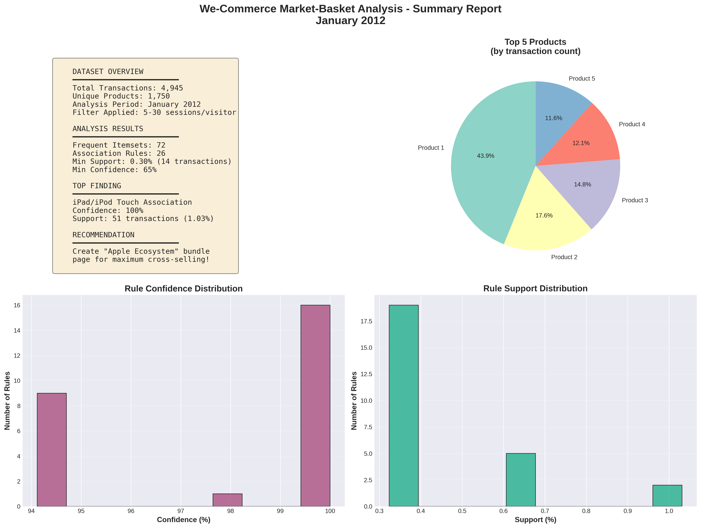
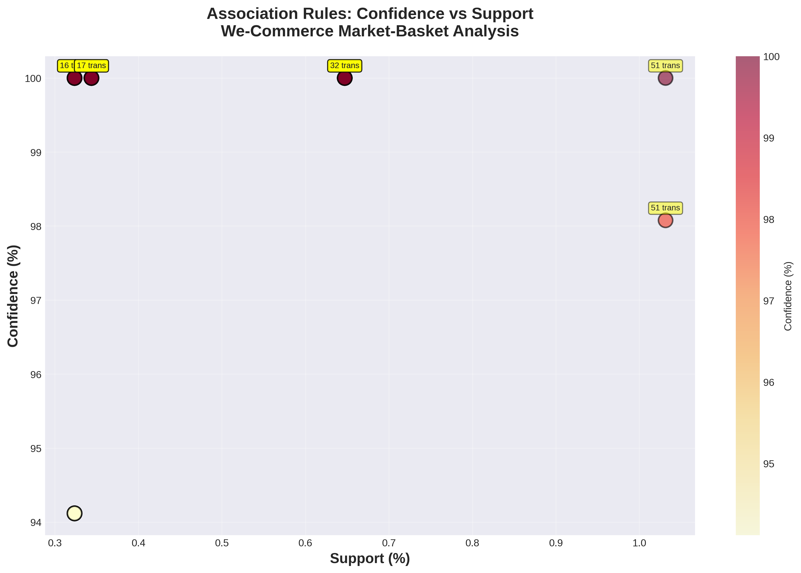
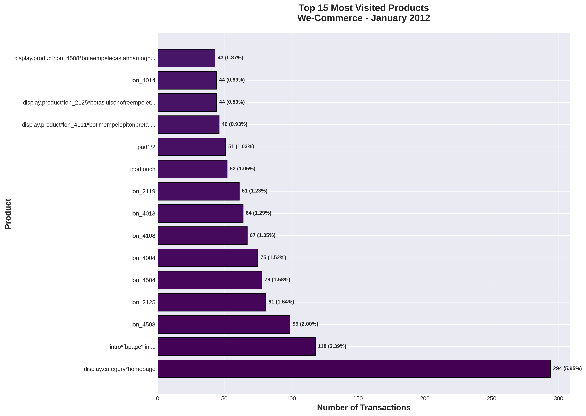
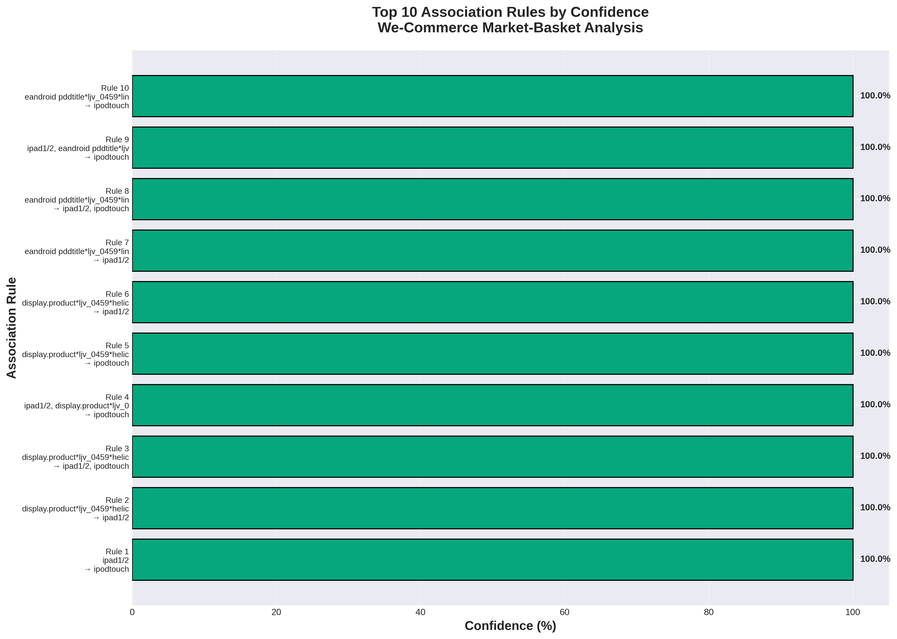
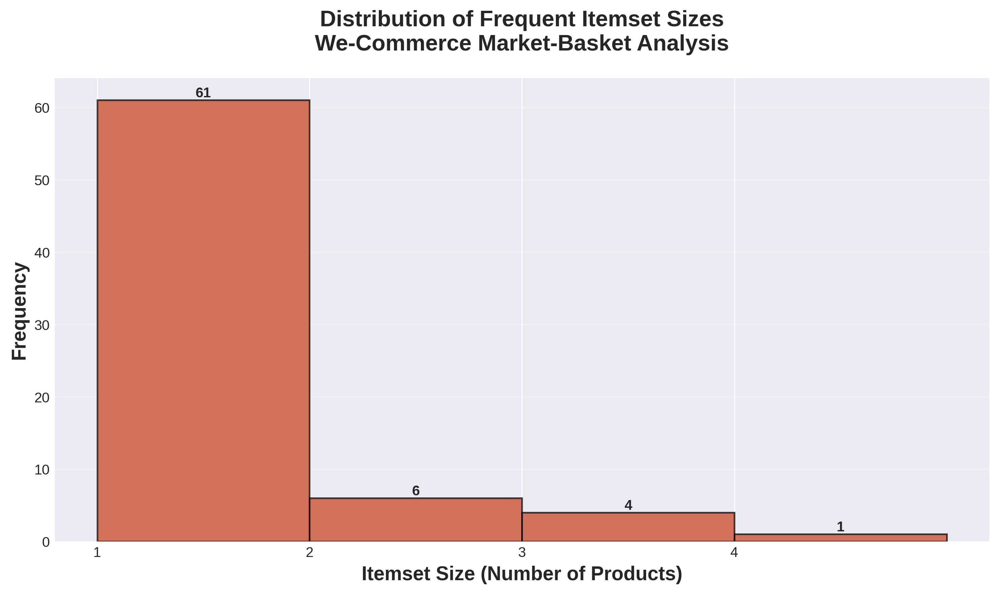
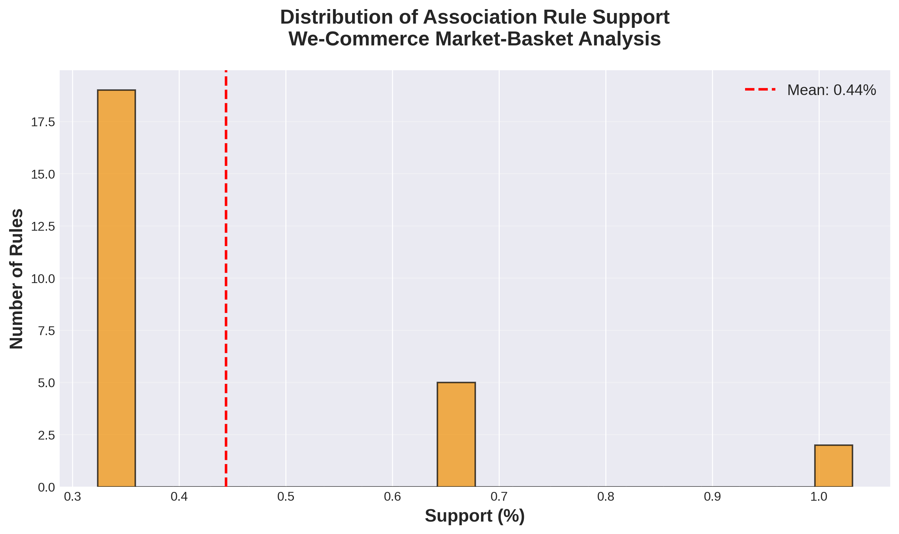

This scatter plot shows the relationship between rule confidence and support. Rules in the upper-right quadrant have both high confidence and support, making them the most actionable for business decisions.

Homepage category and Luis Onofre footwear products dominate visitor traffic. These products should be featured prominently on the main page.

Rules with 100% confidence represent perfect associations. The iPad/iPod Touch combination is a prime opportunity for product bundling.

Most frequent itemsets contain 1-2 products, indicating that most co-visitations involve small product sets rather than large shopping baskets.

Support values are concentrated in the lower range, reflecting the filtered dataset (5-30 sessions) which focuses on meaningful visitor patterns.